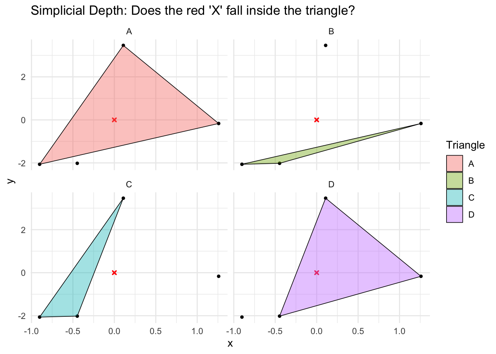

Abstract
This week, my focus shifted to understanding and implementing Simplicial depth in \(R^2\). I began by constructing a baseline \(O(n^3)\) geometric algorithm based on the simple and intuitive definition of the depth measure. While verifying this baseline against the ddalpha package, I encountered an interesting edge case regarding collinear points that skewed my depth calculations. After resolving the geometry, I pivoted to the computational challenge: \(O(n^3)\) is not feasible for large datasets. By transitioning to the combinatorial perspective based on halfspace counts, I was able to implement the algorithm in an optimal \(O(n \log n)\) time complexity, leading to deep explorations of angular sweep logic.
Visualizing Simplicial Depth
The visual above demonstrates the key intuition of Simplicial depth in \(R^2\). Given a query point and a dataset, if we form every possible triangle using triplets of data points from the dataset, what proportion of those triangles strictly contain the query point? In the example above, the dataset contains 4 data points, so there are a total of 4 (\(4\choose3\) \(= 4\)) unique triangles possible. Out of the 4 triangles, 2 triangles contain the query point. Thus, the simplicial depth of the query point is \(\frac{2}{4} = 0.5\).
Theoretical Foundations: The Baseline
To build my foundational understanding, Dr. Leblanc recommended starting with a highly readable paper by Li and Liu (2004) (Li and Liu 2004), which utilizes simplicial depth to construct multivariate nonparametric tests.
The Geometric Definition: In \(R^2\), the simplicial depth of a point \(y\) with respect to a dataset \(X\) is essentially the probability that \(y\) is contained within a random simplex (a triangle in 2D) formed by three points from \(X\). If \(X\) contains \(m\) points, then Li and Liu (2004) (Li and Liu 2004) states that the simplicial depth of \(y\) is given by \[{m\choose3}^{-1} \sum_{*} I(y \in \triangle(X_{i1}, X_{i2}, X_{i3}))\] where * runs over all possible triplets of data points and \(\triangle(a, b, c)\) denotes a triangle with vertices a, b and c.
Implementation 1 (The Baseline): Based on this definition, I built my first algorithm. Using the built-in R function ‘choose’, I calculated the total number of possible triangles \(n \choose 3\). Then, utilizing three nested ‘for’ loops, the algorithm checked every single triangle. To determine if the target point was inside, I compared areas, i.e. if the sum of the areas of the three sub-triangles formed by the query point equaled the area of the main triangle, then the point was contained by the triangle.
While mathematically sound, this baseline approach introduced two major challenges.
Roadblock 1: The Collinearity Edge Case
When I verified my exact output against the ddalpha package, my depth value was off by exactly \(0.0061\). While this seems insignificant, reverse-engineering the probability revealed that my algorithm was off by exactly 30 triangles.
With the help of Dr. Leblanc, I learnt that this issue was being caused by collinear points. Since I was testing on a very small, structured dataset, several points fell perfectly on the same line. A triangle formed by three collinear points has an area of zero, which completely breaks the area-based inclusion logic of the baseline algorithm. When I generated a large, normally distributed dataset (which mathematically reduces the probability of exact collinearity to near-zero), the discrepancy vanished.
Roadblock 2: The Computational Bottleneck
As a computer science student, I immediately recognized that my triple-nested loop yielded a time complexity of \(O(n^3)\). For large statistical datasets, \(O(n^3)\) is computationally slow.
Literature review confirmed that the optimal bound for computing bivariate simplicial depth is \(O(n \log n)\) (Durocher et al. 2018). To achieve this, I had to abandon the geometric area calculations and adopt a combinatorial perspective based on halfspace counts.
The Combinatorial Perspective
Consulting literature on combinatorial depth measures (Durocher et al. 2018), I learned that instead of directly counting the triangles that do contain the query point (which requires looking at triplets of points), the combinatorial approach counts the triangles that do not contain the query point, and subtracts that from the total \(n \choose 3\). Referencing Aloupis’s work, (Durocher et al. 2018) states the combinatorial simplicial depth definition of a query point \(q\) in \(R^2\) as \[{n \choose 3} - \sum_{i = 1}^{n} {h_{i}(q) \choose 2}\] where \(h_{i}(q)\) denotes the halfspace counts, i.e. the number of points that lie to the right of the line that passes through \(q\) and the \(i^{th}\) data point.
A triangle will not contain the query point if one of its vertices lies on a line that passes through the query point and the vertex, and the other two of its vertices lie strictly on one side of this line. Thus, the problem reduces to finding the halfspace counts.
Implementation 2: Halfspace Counts
To implement this, I referred to the algorithm by Rousseeuw and Ruts (1996) (Rousseeuw and Ruts 1996). This transition was mentally challenging. In Week 3, I had to strictly separate the “projection” view from the “halfspace” view for Tukey depth. Now, I had to adapt to the halfspace mindset and carefully ensure that I didn’t use the two interchangeably.
Instead of explaining the dense step by step mechanics here, the basic intuition is that you sort the points by angle (which takes \(O(n \log n)\) time) and then sweep a line around the query point, keeping a running tally of how many points enter and exit the halfspace at each step.
- Note: The complete, executable R script for both the \(O(n^3)\) baseline and the \(O(n \log n)\) Rousseeuw & Ruts implementation is available in the project repository.
Investigating Alternative Sweep Logics
While I successfully implemented the Rousseeuw and Ruts algorithm, I found their specific method of tracking halfspace counts unintuitive, and the notation used slightly confusing. In their logic, sweeping the line can result in bulk additions or subtractions of points to the halfspace count.
Recalling the elegance of my Tukey implementation from week 3, the sweep in that algorithm strictly gains or loses exactly one point at a time. Dr. Leblanc and I collaborated to explore and implement an alternative \(O(n \log n)\) sweep logic for Simplicial depth. We are currently verifying whether this counting logic is an existing technique in computational geometry or a new approach. I look forward to detailing this alternative algorithm in a future update once we have thoroughly confirmed its novelty.
Future Work
- Optimize the R syntax in the algorithm to eliminate computational bottlenecks.
- Check how the algorithm scales as \(n \rightarrow \infty\). Confirm runtime matches the theoretical expectation.
References
Durocher, Stephane, Robert Fraser, Alexandre Leblanc, Jason Morrison, and Matthew Skala. 2018. “On Combinatorial Depth Measures.” International Journal of Computational Geometry & Applications 28 (December): 381–98. https://doi.org/10.1142/S0218195918500127.
Li, Jun, and Regina Liu. 2004. “New Nonparametric Tests of Multivariate Locations and Scales Using Data Depth.” Statistical Science 19 (November). https://doi.org/10.1214/088342304000000594.
Rousseeuw, Peter, and Ida Ruts. 1996. “Algorithm AS 307: Bivariate Location Depth.” Journal of the Royal Statistical Society Series C Applied Statistics 45 (January): 516–26. https://doi.org/10.2307/2986073.